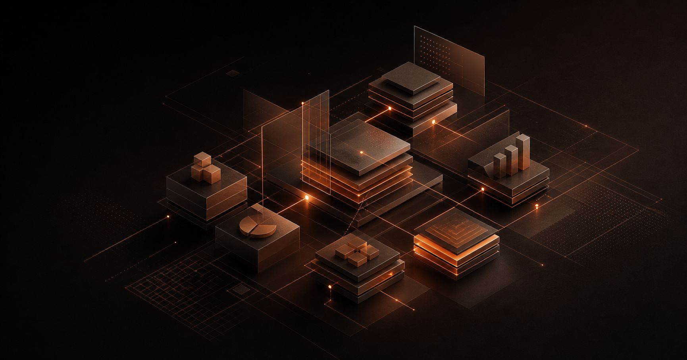

金蝶云星空项目，担任项目助理，参与多组织架构下的企业建模与产品建模配置，协助团队梳理采购转固定资产、委外加工、信用管理等核心业务流程。
PROJECT / 03
CASE STUDY / ERP金蝶云星空项目
参与企业建模、业务流程梳理与 ERP 系统优化，协助团队推进财务业务一体化。
SCROLL TO PROJECT NOTES
PROJECT NOTES / 03
一段从企业建模到流程再造的 ERP 项目实践。
点击展开项目内容通过实践掌握全局共享策略、跨组织成本核算逻辑，以及销售订单至回款、采购付款等业务闭环管理；参与高层会议讨论，协助推动 ERP 功能优化与流程再造。